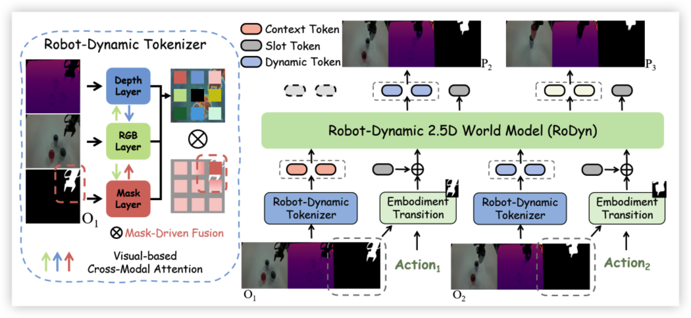
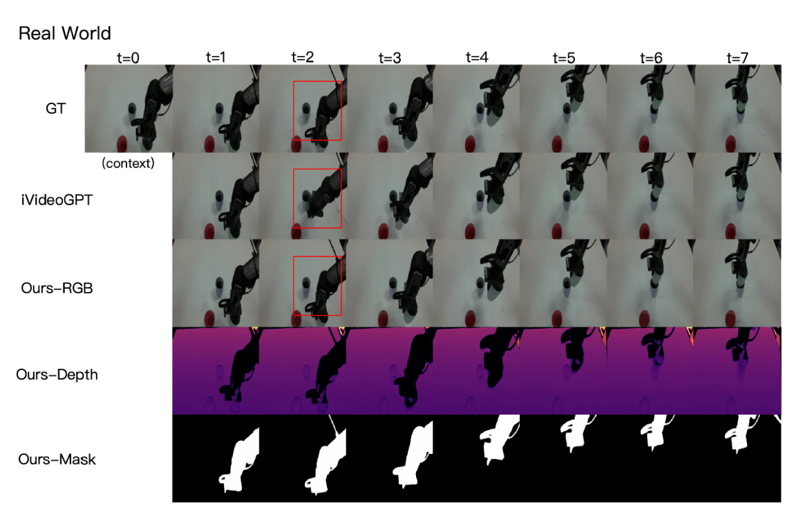

TL;DR
Abstract
Learned world models hold significant potential as neural simulators for robotic manipulation. However, prevalent 2D video-based models inherently lack the spatial and kinematic reasoning crucial for physical interactions. We introduce RoDyn, a novel Robot-Dynamic 2.5D World Model that formulates environmental dynamics within a highly efficient, geometry-aware latent space. Through the proposed Robot-Dynamic Tokenizer, we explicitly couple semantic visual appearances with spatial and agent-centric priors via an RGB-dominated cross-attention mechanism and dynamic mask guidance. Furthermore, by injecting these mask priors directly into sequence transitions, our Mask-guided Autoregressive architecture drives the model to focus on active robot-object interaction regions. Extensive experiments demonstrate that RoDyn establishes SOTA generation fidelity across large-scale datasets. Crucially, it translates these predictive capabilities into substantial downstream gains, accelerating model-based reinforcement learning and achieving a 42% improvement in real-world imitation learning success rates over pure 2D baselines.
Architecture

Comparisons with the State-of-the-art
We present qualitative comparisons with the following state-of-the-art models:
